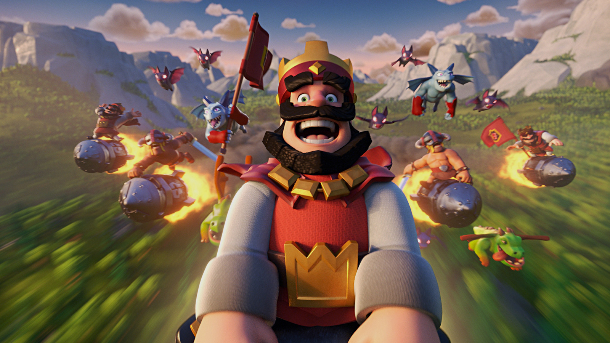
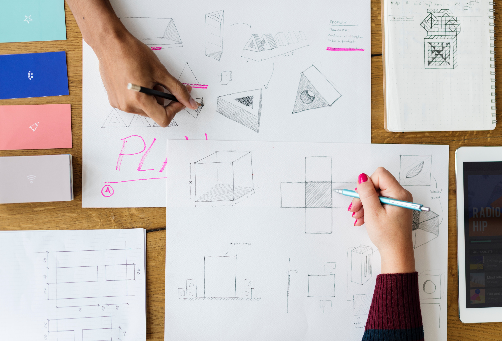

- 심심할때 추천 하는 게임
- 그냥 할 게 없을 때
- 집에서 할게 없을때
집에서 할게 없을때

1. 게임하기
전 이전에서 말하듯이 게임을 추천해용! 어 특히 컴퓨터겜을!
league of legends인데요 이 홈페이지에 들어가셔서 다운만 하세욧! 홈페이지는 심심할때 추천 하는 게임에 들어있습니다! 진짜 다운로드만 누르면 됩니다 자세한설명은....
세계관
'룬테라'라는 세계를 배경으로 크게 발로란 대륙, 그림자 군도, 아이오니아, 푸른 화염섬으로 구성되어 있다.
데마시아
데마시아는 가렌의 어머니가 이끄는 입헌군주국으로 발로란 대륙의 서쪽에 위치해 있다. 데마시아의 국조(國祖)는 오를론으로 뽀삐의 스승이자 친구이다. 이 곳의 왕자는 리그 오브 레전드 게임 내에 등장하는 자르반 4세이다. 데마시아는 강력하고 질서 잡힌 국가로 오랫동안 군사적 영광을 누려 왔다. 이곳에선 정의와 명예, 의무를 중요한 가치로 여기며 국민들은 강렬한 자부심에 가득하다. 자급자족하는 농업 국가로 비옥하고 풍족한 농토와 목재를 수급할 수 있는 삼림, 광물 자원이 풍부한 산악 지대를 갖추고 있기도 하다. 태생적으로 방어적이고 폐쇄적인 국가이기도
한데, 이는 아마도 야만인이나 약탈자들, 또는 세력 확장을 꾀하는 다른 세력의 빈번한 침략 탓도 있을 것이다. 일각에선 데마시아의 황금 시대는 이제 저물었으며, 이 나라가 세계의 변화에 적응할 수 없다면 몰락은 피할 수 없다고 주장하기도 한다. 사실 데마시아가 변화와 적응 같은 것을 할 수 있다고 보는 사람은 많지 않다. 그럼에도 불구하고 데마시아는 여전히 발로란을 지배하는 강국 중 하나이며, 룬테라에서 최강으로 꼽히는 정예군을 보유하고 있기도 하다. 리그 오브 레전드에 등장하는 주요 두 도시 국가 중 하나이기도 하다.
녹서스
녹서스는 보람 다크윌이 지배했던 도시국가로 발로란 대륙의 동쪽에 위치해 있으며 악명을 널리 떨치는 강력한 제국이다. 다른 나라에 살고 있는 이들에게 녹서스는 폭력적이고 침략을 일삼는 위험한 나라이지만, 바깥에서 보이는 호전성을 잠시 접어두고 안을 들여다보면 특이할 정도로 포용적인 사회를 발견할 수 있다. 이 나라에선 모든 국민의 강점과 재능을 존중하고 개발해 주는 것이다. 녹서스 사람들은 한때 사나운 약탈 민족이었으나 현재 제국의 수도가 된 고대 도시를 파괴한 뒤 그곳에 자리잡았다. 이들은 사방에 도사린 위협적인 적들을 상대로 물러서는 일 없이 사납
게 싸웠고 해가 지날 때마다 국경을 넓혀갔다. 이러한 생존을 위한 투쟁 덕분에 다른 무엇보다 힘이라는 가치를 숭상하는 자존심 강한 국민성이 형성되었다. 물론 여기서 말하는 힘이라는 가치는 매우 다양한 방식으로 드러날 수 있으며, 녹서스에선 신분, 배경, 출신지, 재산에 관계 없이 필요한 능력을 드러내보일 수 있다면 누구든지 출세길에 올라 권력을 차지하고 존경받을 수 있다.
녹서스는 또한 리그 오브 레전드에 등장하는 주요 두 도시 국가 중 하나이며 데마시아와 라이벌 관계이다. 이 둘은 수 세기간 5번의 전쟁을 치뤘는데, 이것을 '룬 전쟁(Rune Wars)'이라고 부르며 이는 지각 변동과 이상기후를 일으켰다. 그래서 발로란의 숨은 권력자인 소환사들은 룬테라의 훼손을 막고 분쟁을 중재하기 위해 '전쟁 학회'라는 기관을 만들어 리그 오브 레전드를 개최했다. 때문에 정치적 분쟁들은 더이상 전쟁이 아닌 정의의 전장에서 펼쳐지는 소환된 챔피언간의 리그 경기를 통해서 해결해야만 했다.
아이오니아
아이오니아는 룬테라 북동쪽에 위치하는 섬 나라로 아름다운 옛 모습을 그대로 간직한 자연스런 마법의 땅이며 갈린, 나보리, 숀-싼 등 세 부분으로 나뉜다. 대륙이라 할 만큼 거대한 섬 이곳 저곳에 마을을 이루고 흩어져 사는 이곳 사람들은, 세계 속에서 조화와 균형을 이루는 영적인 삶을 추구하고 다른 나라들과 달리 물질적인 가치보다 자연의 균형과 평화, 그리고 내면의 깨달음 등을 중시하는 나라이다. 아이오니아의 수많은 종파와 단체들은 각자의 길과 이상을 추구하는데, 간혹 서로 다른 생각이 상충되는 일도 벌어진다. 자급자족하며 고립주의적인 성향이 있어, 전쟁
이 수세기 동안 발로란을 휩쓰는 동안에도 아이오니아는 중립으로 남아 있었다. 이러한 가치관으로 인해 리그 오브 레전드에 가입하지 않았고 리그에 보호되지 않아 녹서스의 침략을 받게 된다. 침략이 시작된 7년 후 아이오니아는 하는 수 없이 귀족 '카르마'를 중심으로 녹서스를 저지하기 위해 리그에 가입하게 되고 녹서스와 경기를 펼쳤지만 패배하게 되어 15년동안 합법적으로 지배를 받게 된다. 이에 한 수도승이 녹서스의 폭정에 반대하는 분신공양을 감행하면서 이 모습이 통신망을 통해 룬테라 전역으로 퍼지게 되었고 많은 국가들이 녹서스를 비난하기 시작하였다.
마지 못해 녹서스는 아이오니아의 재경기를 받아들이게 되었고 이 경기는 라이엇 게임즈에서 스토리를 벗어나 실제 플레이어를 선발해 이벤트 매치로 진행되었으며 아이오니아가 승리를 거두게 되었다. 라이엇 게임즈에선 이를 기념하여 '명석함의 아이오니아 장화'를 만들었다.
전장
소환사의 협곡을 단순화한 그림. 노란색 경로는 "라인"이라 불라며 게임 시작부터 끝까지 미니언이라는 자동적으로 생성되는 병사들이 상대방 진영으로 진격하는 통로이고 파랑 밑 빨강 점은 라인을 방어하는 포탑이다. 각 진영의 왼쪽 아래/오른쪽 위 구석에는 넥서스가 있는데 이 넥서스를 파괴해서 승리하는 것이 이 게임의 목표이다. 중간의 검은 점선은 "강"으로 두 진영을 가르는 경계선이 된다.
리그 오브 레전드에 쓰이는 전장은 소환사의 협곡, 뒤틀린 숲, 칼바람 나락, 수정의 상처(현재 삭제됨[주 1]) 등이 있으며 이외에 특별 게임 모드로 따로 제작된 전장도 추가되어 있다.
소환사의 협곡(Summoner`s Rift) : 리그오브레전드의 대표적인 전장으로 5 대 5로 구성되어 맞붙게 되는 전장이다. 각각의 팀은 상대편 진영의 넥서스를 파괴해야 승리를 할 수 있다.
뒤틀린 숲(Twisted Treeline) : 소환사의 협곡과 달리 3 대 3규모의 소규모 전장이다. 마찬가지로 상대편 진영의 넥서스의 파괴를 목표로 한다.
칼바람 나락(Howling Abyss) : 5 대 5로 구성되며 공격로가 하나밖에 없는 전장이다. 소환사의 협곡과 동일하게 상대편 진영의 넥서스를 파괴해야 승리한다.
그 외에도 특별 한정 모드들인 'U.R.F. 모드', '초월 모드', '전설의 포로 왕 모드', '불의 축제 모드', '헥사 킬 모드', '단일 챔피언 모드', '니가가라 하와이 모드' 등이 존재한다.
소환사
리그 오브 레전드에서 유저를 일컫는 용어이다. 게임을 통하여 소환사는 영향력 포인트(IP[4])를 이용하여 챔피언을 구매할 수 있었다. 그러나 시즌 7이 종료된 이후로 기존 마법공학 제작소의 '파랑 정수(BE)'와 기존의 화폐인 영향력 포인트(IP)가 통합되어 파랑 정수를 기존의 IP 개념으로 대체하였다. 소환사의 레벨은 기존에는 30까지만 올릴 수 있었지만 시즌 7이 끝난 후 레벨 제한이 풀리게 되어 레벨을 무제한으로 올릴 수 있게 되었다.
챔피언
리그 오브 레전드에는 총 143개의 챔피언이 있으며 암살자, 전사, 마법사, 원거리 딜러, 서포터, 탱커로 분류된다. 챔피언들은 녹서스, 데마시아, 밴들 시티, 프렐요드, 그림자 군도 등 각자의 소속이 있으며 방대한 스토리로 서로 연관되어 있다. 하지만 이러한 방대한 스토리 때문에 앞뒤가 맞지 않는 경우가 많으며, 이에 계속 패치가 이루어지고 있다. 롤 챔피언들의 이름에는 다양한 유래가 있다.
럭스 : 라틴어로 lumos는 빛을 뜻하는데 lumos의 lu와 빛의 단위인 룩스(lx)에서 x를 따와서 럭스(lux)가 되었다.
노틸러스 : 쥘 베른의 '해저 2만 리'에 나오는 잠수함의 이름이다. 그래서 인게임에서의 형태도 잠수함의 모양을 하고 있다.
녹턴 : 어둠을 뜻하는 라틴어 Nox와 영단어 turn off(불을 끄다)가 결합되어 녹턴(Nocturne)이 되었다.
누누 : 라이엇 게임즈의 관계자가 키우고 있는 애완견의 이름에서 따왔다고 한다.
아리 : 리그 오브 레전드의 한국 서버 정식 서비스 기념 챔피언으로 원래는 아리 외에 단비, 나비, 루리 등의 이름도 있었으나 한국 홈페이지에서는 아리라는 이름이 유저 투표율 1위를 달성하게 되어 현재의 아리로 결정되었다.
아무무 : 아무무는 A mummy(한 미라)를 이용하여 만든 이름이다.
애니 : Rioter의 여자친구의 이름 애니와 그녀가 아끼던 인형 티버에서 따왔다고 한다.
이즈리얼 : 라이엇 게임디자이너 Colt Azreal Hallam의 이름에서 따왔다고 한다. 이외에도 질리언, 트린다미어, 볼리베어, 애쉬 등도 Rioter들의 닉네임에서 유래되었다.
헤카림 : 그리스 신화에 나오는 키메라(Chimera)의 철자 순서를 바꾸어 헤카림(Hecarim)이라는 이름을 지었다고 한다.
리 신 : Rioter의 생일기념으로 나온 챔피언이다.
이외에도 많은 유래들이 존재한다. [출처 필요]
룬과 특성
시즌 8 이전의 룬과 특성
룬은 시즌7까지는 표식(빨간색), 인장(노란색), 문양(파란색), 정수(보라색) 4가지 룬으로 구성되어 있었으며, 표식, 인장, 문양, 정수 각각에 들어가는 룬의 종류(물리 공격력, 방어력, 주문력, 마법관통력 등등)에 따라 효율이 달랐으며, 비록 플레이에 영향을 미치는 여러 종류의 룬들이 모두 있었으나 표식, 인장, 문양, 정수 각각에 들어가야하는 룬들이 대중적으로 정해져 있었다. 예시로, 마법관통력만은 문양(파랑)이 아닌 표식(빨강)에 장착할 때 더 많이 오른다. 리그 오브 레전드의 최대 레벨은 30이었으며 1레벨당 1개씩 장착 슬롯의 잠금이 해제되어 표식9개, 인장9개
, 문양9개, 정수3개로 총 30개를 장착할 수 있었다. 특성 또한 1레벨 오를 때마다 1포인트씩 주어졌으며, 레벨 30까지 총 30포인트를 주었다. 시즌 6 전까지는 공격, 방어, 보조 총 세 종류로 나뉘었으며, 시즌 6 이후로는 책략, 결의, 영감으로 특성이 나뉘었고, 시즌 8에 특성 시스템은 삭제되었다.
시즌 8 이후의 룬
현재는 2017년 11월 7일에 시즌 7이 끝난 이후로 특성이 삭제되어 오로지 룬 시스템만 서비스하게 되었으며, 정밀, 지배, 마법, 결의, 영감으로 5개로 나뉘게 되었다. 핵심 룬 1개와 보조 룬 1개를 장착할 수 있으며 핵심 룬에서 4개를 고르고 보조 룬에서 2개를 고를 수 있다.
앜 귀찮아서 띄어쓰기 같은거 안했으니깐 이해해 주시고 그냥 읽으세요! 출처는 위키백과이고 굳이 안읽어도 되요? ㅇㅋ? ㅇㅋ
2.음.... 만약에 롤(리그 오브 레전드 줄인말)은 너무 어렵거나 시간이 오래걸린다 혹은 용량이없다, 컴퓨터가 없다 등등이면
혹시 집에 아이페드, 태블릿 혹은 스마트폰이 있으세요? 만약 있으시면 이 두가지 게임을 추천 합니다
첫번째는!! 클래시로얄!

클래시로얄은 1대1 전투게임으로 상대방 킹타워를 누가 먼저 부시냐의 대결인데요
엘릭서를 사용해서 전투를 벌립니다 총 8장의 카드를 순환하며 싸우는 전투인데요
엘리서는 10이 최대이고 1초? 그쯤마다 엘릭서가 1씩 찰것입니다
여러모로 계획을 세워야 하는데요 자세한건 그냥 검색해버렷!!
두번째는 헬릭스 점프!!!
얘도 클래시로얄이랑 같이 그냥 플레이 스토어에 쳐서 다운로드 하면되는데
얜 와이파이 필요없고 그냥 공을 밑으로 보내는 게임인데 한번만 해보시길...
3.여러분이 눈치 채셧을텐데 왜자꾸 게임만 얘기하냐.... 그럴꺼에요
그래서 준비했습니다 만약 자유다 이러면 게임도 가능하지만 게임은 좀 그렇다..
그러면 공부를 하세요~!!죄송합니다 어 추천은 노트나 A4용지 있으시죠?

그럼 거기에다가 그림을 그리시든가 혹은 자신의 장점20가지 이런 사소한 것들을 적으셔도 좋습니다
아님 색종이를 접어도 되고 제가 준비한것은 이것들이 끝입니다 그럼 좋은 하루 보내세용!!